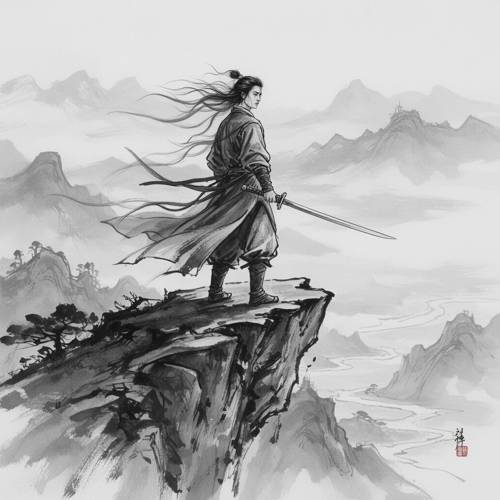
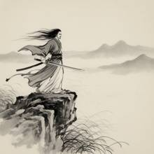
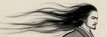
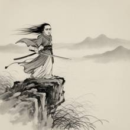
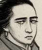

Style — In the ink painting style, a lonely swordsman stood on the edge of a c
In the ink painting style, a lonely swordsman stood on the edge of a cliff, facing the strong wind. His face had no expression, but his eyes were filled with endless sadness.

Direct — one call, no iterationContinuum — Qwen3.8-27B + FLUX.2-dev
Judge — Direct
PASSStyle — The image is rendered in a monochromatic palette with varying shades of gray, consistent with the ink painting style. The background mountains and mist are depicted with soft washes, while the foreground cliff, trees, and the figure of the swordsman are drawn with sharper lines and textured brushstrokes. A red artist's seal is present in the lower right corner, further reinforcing the traditional ink painting aesthetic.
FAILAttribute - Expression — The swordsman is shown from a three-quarter view. His mouth is closed in a neutral line. His brow is slightly furrowed. This slight furrowing constitutes a minimal expression, so the face is not completely without expression. The prompt's requirement for 'eyes filled with endless sadness' describes an emotion, which is an interpretation and not an objectively verifiable visual feature of the eyes themselves.
Judge — Continuum
PASSStyle — The image is rendered in a style that strongly resembles a traditional East Asian ink painting. It uses a monochrome color palette with black ink on a light, textured background. The use of visible, calligraphic brushstrokes for the cliff, grass, and figure, along with ink wash techniques for the background mountains and mist, are all characteristic features of this style.
PASSAttribute - Expression — The swordsman's face has a neutral mouth, which aligns with the 'no expression' part of the prompt. However, his eyes are depicted with heavy, downturned eyelids, and the overall shape and shading around the eyes convey a clear emotion of sadness, fulfilling the 'eyes were filled with endless sadness' requirement.
What the agent did
Thinking
The user is asking for an ink painting (Chinese-style ink wash painting / sumi-e) style image. A lonely swordsman standing on the edge of a cliff, facing a strong wind. His face is expressionless, but his eyes are filled with boundless sorrow. Let me think about this. An ink painting style — ink wash painting, monochrome with washes, lots of negative space (ma), mist, distant mountains. A swordsman standing on the edge of a cliff, facing the strong wind. The wind can be suggested by flowing robes, hair, and streaks of clouds and mist. Face: expressionless, but eyes filled with boundless sorrow. In the ink wash style this is tricky — the face is usually painted with fine lines. The prompt says his face is expressionless but his eyes hold sorrow. Let me generate a detailed prompt: "Ink wash painting style (sumi-e / shuimo hua), monochrome black ink on textured rice paper. A lone swordsman with a long sword at his hip stands at the very edge of a craggy cliff, his body facing the howling wind. His flowing robe and hair streaming horizontally in the fierce wind. His face is calm and expressionless, but his eyes are heavy with boundless sorrow, rendered in fine ink lines. Vast negative space, layered mist, distant mountains faint in dilute ink, wind streaks of swirling clouds and grass. Brushstrokes of xieyi (freehand) style, splashed-ink washes, dry brush texture. Minimalist composition, melancholic atmosphere." Generate with flux2-dev (following the benchmark policy, always use flux2-dev for both generation and editing, and pass model: "flux2-dev" every time). Omit steps and guidance. After that, inspect, edit as needed, and mark the best. Let's generate.
Step 1 — `generate_image`
{
"model": "flux2-dev",
"prompt": "Traditional Chinese ink wash painting (shuimo), monochrome black ink on aged rice paper texture. A lone swordsman with a long blade at his waist stands at the very edge of a rugged cliff, his body turned into the fierce wind. His flowing robe, belt and long hair stream horizontally in the gale, rendered with sweeping dry-brush strokes. His face is calm and expressionless, fine ink lines, but his downcast eyes carry endless deep sorrow. Vast empty negative space, layers of dilute mist, faint distant mountains in pale ink wash, wisps of wind and wild grass sketched in expressive brushwork. Xieyi freehand style, splashed-ink washes, dry brush textures, minimalist melancholic composition, ink gradients from solid black to faint gray.",
"width": 1024,
"height": 1024
}
Result img_0

Thinking
The image is fairly good. It's a swordsman on a cliff edge in ink wash painting style, his hair and robes flowing in the wind, and the background is mist and mountains. Let me check the details: 1. Is he holding a sword? Yes, he seems to be gripping the hilt, with the sword drawn and pointing forward (toward the direction of the wind / the viewer's right side). Actually, the prompt just says "swordsman" — having him grip the sword like this is fine, and it fits the atmosphere. But "lonely swordsman" — it might be better if the sword were at his waist, but the state of gripping a drawn sword in the wind is also dramatic and fitting. In fact, in the prompt he's just standing on the cliff edge facing the wind. Having him grip a drawn sword pointing in the direction of the wind is a good interpretation. 2. His face: expressionless, but sorrow in his eyes. Let me zoom in and look at the face. 3. Wind: hair and robes are flowing strongly — good. To confirm the sorrow in the eyes, let me examine the face region in detail.
Step 2 — `inspect_region`
{
"image": "img_0",
"roi": "the swordsman's face and head",
"padding": 0.1
}
Result img_1

Thinking
The face is drawn in profile: calm, with a slight frown, eyes looking downward/sideways. The expression is pretty good — a pensive, sorrowful look in profile. The eyes appear to be looking down, with a heavy, sad brow. The face has a beard and is drawn in an ink-wash style. Critique against the prompt: - "Face without expression" — the face here shows slight emotion (a furrowed brow, downturned mouth, somewhat melancholic). The prompt asks for a face without expression, but eyes filled with boundless sorrow. In profile, the eyes are just a line, so it's hard to convey "eyes filled with sorrow." Options: 1. Leave it as is — it's an ink painting, and subtle melancholy fits. The sorrowful look in the profile is within acceptable range. 2. Edit the face to be more expressionless while making the eyes more prominent, heavy, and sorrowful — for example, change to a three-quarter view so the eyes are more visible, and add a drooping, heavy gaze. The prompt explicitly says "face without expression, but eyes filled with boundless sorrow" — this is a key detail. In the current image, the whole face shows slight emotion (frown), and the eyes are barely visible in profile. Editing to a three-quarter view with clearly heavy, sorrowful eyes might better match the intent. But editing the face in an ink-wash style is risky — a whole-image edit could disrupt the entire composition. Let's think about the risk/reward: Current state: the image is strong in style, composition, and wind. The face is decent, but "eyes filled with boundless sorrow" is not clearly readable. The prompt emphasizes this detail. Try an edit: turn the face slightly toward the viewer (three-quarter view), keep it expressionless (neutral brows and mouth), and convey a deep, sorrowful gaze in the eyes — drawn in fine ink lines, maybe with faint drooping eyelids and downcast eyes. Use edit_image with a precise instruction: "Turn the swordsman's head slightly toward the viewer into a three-quarter view so his eyes are clearly visible. Keep the facial expression neutral and expressionless — flat brows, closed mouth. But render the eyes with a deep, sorrowful gaze: heavy drooping upper eyelids, eyes looking down, drawn in fine ink lines. Preserve the ink-wash painting style, hair, and everything else exactly as is." Risk: edit_image might change other parts. Use references? The edit model is flux2-dev, and references is a parameter of edit_image. Passing img_0 as a reference might help preserve the overall appearance. Actually, the edit already starts from img_0 itself, so the reference is for locking visual aspects — since we're editing that image itself, it's unnecessary. Let's try the edit. If it gets worse, mark img_0 as the best and stop. First, mark img_0 as best (since it's in a submittable state), then edit.
Step 3 — `mark_best`
{
"image": "img_0",
"reason": "Strong ink-wash composition: swordsman on cliff edge, gale-blown hair and robes, misty mountains. Submittable as-is."
}
Thinking
Alright, let's try improving the face. The current face is in profile, and the eyes are barely visible. The prompt asks for "a face with no expression, but eyes filled with boundless sorrow." Let's edit the head to be a three-quarter view where the eyes are visible, with a neutral expression but heavy, sorrowful eyes.
Model
The ink wash style, the storm, and the cliff are all in place. However, since the prompt emphasizes "expressionless face, but eyes filled with sorrow," in a pure profile view the eyes can't be read. I'll try a targeted edit to the head.
Step 4 — `edit_image`
{
"image": "img_0",
"model": "flux2-dev",
"prompt": "Redraw only the swordsman's head: turn it slightly toward the viewer into a three-quarter view so both eyes are clearly visible. Keep the face calm and expressionless \u2014 flat neutral brow, closed mouth, no strong emotion on the features. Render the eyes as heavy, sorrowful downcast eyes filled with endless sadness: drooping upper eyelids, eyes gazing downward, drawn in fine ink lines, a faint dark ink wash under the eyes to suggest tears held back. Preserve the exact same ink wash painting style, the long black hair streaming in the wind, and every other part of the image unchanged."
}
Result img_2

Thinking
The edit went pretty well. The face is now visible from a three-quarter angle, and the eyes are visible—somewhat downcast and droopy, looking sad. The face is fairly expressionless/neutral, but the eyes appear heavy and sorrowful. Let me zoom in to check the facial details.
Model
The face is now turned enough to show the eyes. Let me zoom in to verify the detail held up.
Step 5 — `inspect_region`
{
"image": "img_2",
"padding": 0.1,
"roi": "the swordsman's face and head"
}
Result img_3

Thinking
Now the face shows: a nearly neutral, expressionless face, but with heavy, drooping, downcast eyes — one eye has a visible tear streak beneath it, and there are dark shadows under the eyes. This conveys "eyes filled with boundless sorrow" while the mouth and brows remain relatively neutral. The face reads as calm/expressionless, with sorrow in the eyes. However, compared to img_0's profile portrait with the wind-blown beard and long hair, this face looks somewhat younger/clean-shaven. In img_0 there was a beard, but in the edited face the beard appears to be gone or much fainter. Hmm. The prompt doesn't mention a beard, so it's not a requirement. But there's a slight stylistic inconsistency: the face now looks more "portrait-like" and smooth compared to the ink-brush-work rest of the image. Still, it's within the acceptable range, and the eyes are clearly sorrowful with the tear streak. Let me compare the two candidates: img_0: Strong ink-brush-work style, profile portrait, wind-blown hair, but the eyes can't be read (face is in profile). The prompt's key detail — sorrowful eyes — isn't conveyed. img_2: Same composition, with the face turned slightly to reveal heavy, downcast, sorrowful eyes with a tear, and an expressionless mouth. This matches the prompt better. The rest of img_2 is preserved: sword, robe, cliff, grass, mist, mountains, wind-blown hair. Let me check the entire body of img_2 for any artifacts from the edit — shoulders/neck/robe. From the full image, the shoulder/robe transition looks fine, and the hair is still flowing. Good. I think img_2 is better and matches the prompt better. I'll mark img_2 as the best and finish. One more check: in the full view of img_2, does the face blend well with the neck/robe? From the full image it looks consistent — the face is drawn in ink-line portrait style, with the collar below. No problem. I'll mark img_2 as the best.
Model
The facial details now match the prompt well: a calm, expressionless face, but heavy drooping eyelids, downcast eyes, and a single streak of ink like a tear under the eyes—endless sorrow in the gaze. The rest of the painting (the gale, the robes, the sword, the mist) is preserved.
Step 6 — `mark_best`
{
"image": "img_2",
"reason": "Better match to the prompt: expressionless face now with clearly sorrowful downcast eyes (tear streak), while keeping the ink-wash style, cliff, gale-blown hair/robes, and misty mountains of img_0."
}
Thinking
Final check: the marked image is img_2, the latest and best version. All elements of the prompt are present: - Ink painting style ✓ - A lone swordsman at the edge of a cliff ✓ - Facing the strong wind (hair and robes streaming, wind streaks, grass) ✓ - Expressionless face ✓ - Eyes filled with boundless sorrow ✓ Done. Stopping here — good enough, and over-editing risks ruining the result.
Model
The painting is complete. Here's what the final image delivers against the prompt: - **Ink painting style** — monochrome ink wash on rice paper, xieyi freehand brushwork with dry-brush textures and faded mountain washes, and plenty of empty negative space for atmosphere. - **Lonely swordsman on the cliff edge** — a single figure in flowing robes stands on a craggy outcrop, hand on his sword, framed by vast empty mist. - **Strong wind** — hair, sleeves, and belt stream horizontally in the gale; wild grass bends in streaks around the cliff. - **Expressionless face, sorrowful eyes** — the face is turned just enough to reveal heavy, downcast eyes with drooping lids and a faint tear of ink, while the brow and mouth stay calm and neutral. The marked best result is img_2, which I would be happy to submit.